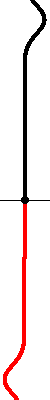
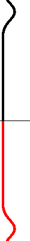

|  | Angebundenes Ende Ist das Seilende angebunden, so tritt ein Phasensprung von π auf, d.h. der Momentanwert der reflektierten Welle hat ein anderes Vorzeichen wie jener der einfallende Welle. Mathematisch kann man das modellieren, indem man punktsymmetrisch zur einlaufenden Welle (schwarz) eine zweite, gedachte Welle (rot) in Gegenrichtung auf das Seilende zulaufen lässt. So ist garantiert, dass am Seilende die Überlagerung der zwei Wellen immer Null ergibt. |
|  | Freies Ende Kann das Seilende frei schwingen, so tritt kein Phasensprung auf, d.h. die Momentanwerte der reflektierten Welle haben dasselbe Vorzeichen wie jene der einfallenden Welle. Mathematisch kann man das modellieren, indem man symmetrisch zur einlaufenden Welle (schwarz) eine zweite, gedachte Welle (rot) in Gegenrichtung auf das Seilende zulaufen lässt. Die Momentanwerte der gedachten Welle haben dasselbe Vorzeichen wie jene der einlaufenden Wellen. Während der Reflexion schwingt das Seilende besonders weit aus. |